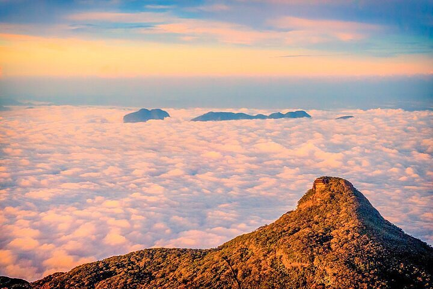

Sacred Peaks & Sunrise Views

Adam's Peak is one of Sri Lanka's most sacred mountains, famous for its sunrise pilgrimage and the revered "Sri Pada" footprint at the summit. The climb rewards hikers with breathtaking skies and unforgettable spiritual energy.
Best time to visit
Climb between December and April for clear views, then rest in the mountain villages where visitors share stories and local hospitality after the dawn ascent.